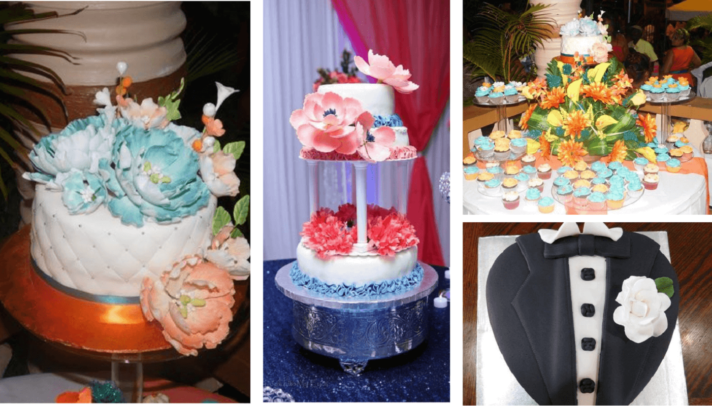
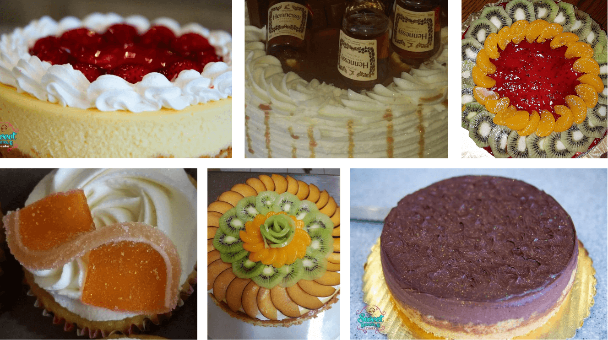
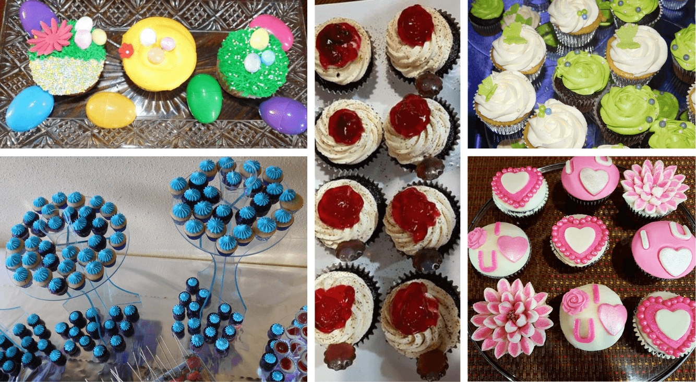
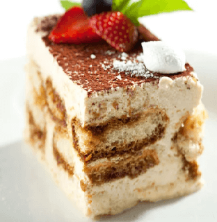
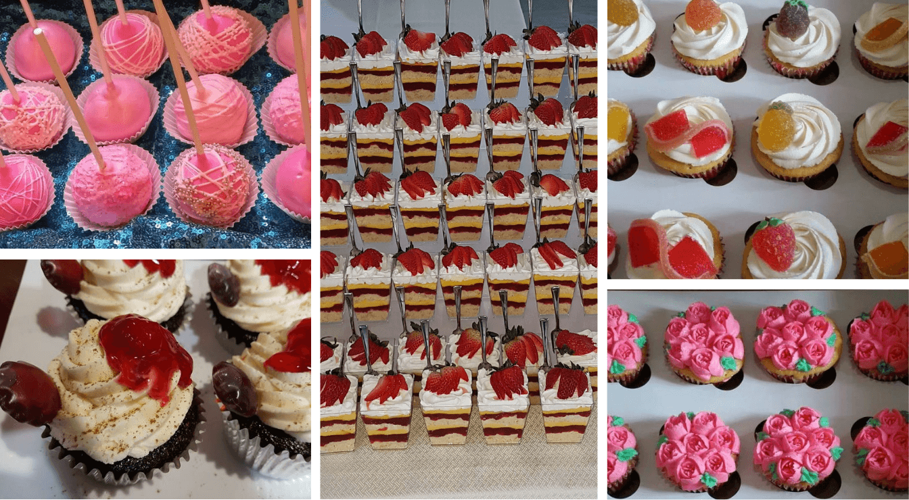
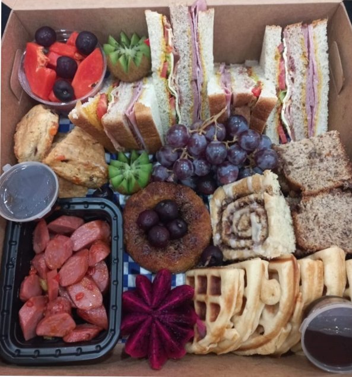
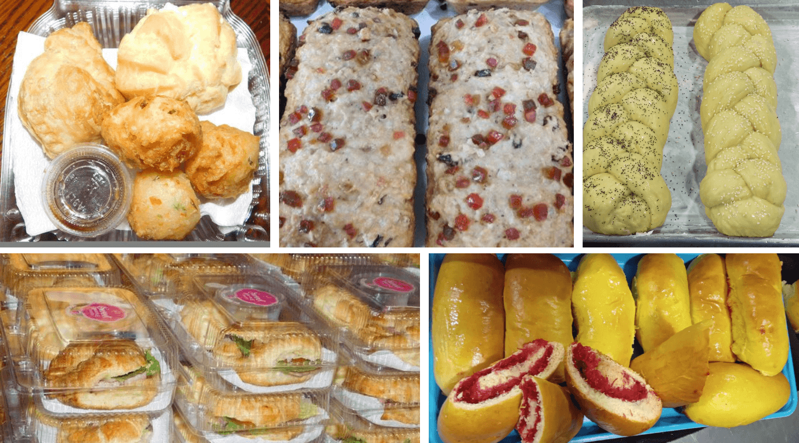

Food Catering Services:
At Sweet Dazzle Treatz, we offer catering services of baked, packaged and specialty goods. An extensive range of delectable pastries, desserts, breads and cakes that blend traditional techniques with modern flavors. Every item is meticulously prepared using only the finest ingredients, ensuring that each bite is a moment of pure bliss!
| Service | Description |
|---|---|
|  Speciality Cakes |
Our Specialty Cakes are custom-designed and crafted to perfection for your special occasions. From multi-tiered wedding cakes adorned with fondant and edible flowers to themed birthday cakes shaped and decorated to match your interests, our gourmet cakes feature layers of exotic flavors like ganache, mousse, or fresh fruit. Made to order, these cakes add a memorable touch to any celebration, making milestones, holidays, and special events truly unforgettable. |
|  Cheesecake |
Our Cheesecake is a rich and creamy delight, celebrated for its smooth, velvety texture. Available in a variety of flavors, each slice is a piece of heaven, garnished with fresh fruits, whipped cream, or a drizzle of luscious sauces. Whether it's a special occasion, a celebration, or just satisfying your sweet tooth, our cheesecake is the perfect indulgence. |
|  Cupcakes |
Our Cupcakes are delightful, individual-sized cakes that are perfect for any occasion. Available in a variety of flavors such as vanilla, chocolate, and red velvet. Each cupcake is topped with a generous swirl of frosting, from simple buttercream to elaborate piped decorations, and adorned with sprinkles, edible glitter, fruit, or other toppings. Our cupcakes are ideal for wedding displays, celebrations, parties, or everyday treats. |
|  Tiramisu |
Experience the classic charm of our Tiramisu, a beloved Italian dessert known for its rich layers and bold flavors. Delicate ladyfinger cookies are soaked in a blend of coffee and liqueur, then layered with creamy mascarpone cheese and finished with a dusting of cocoa powder. Tiramisu, meaning "pick me up" in Italian, offers a perfect balance of sweetness and robust coffee flavor, making it a cherished treat for any occasion. |
|  Bento Cakes |
Bento Cakes are small, charming cakes designed for both aesthetic appeal and convenience. Offered in classic flavors like chocolate, vanilla, and red velvet, these cakes are decorated with fresh fruits, edible flowers, or intricate piping. You can also include cupcakes or cup desserts. Their compact size and visually appealing presentation make them perfect for individual servings at events, as gifts, or for personal enjoyment. |
|  Brunch Box |
Our Brunch Box is a delightful assortment of breakfast and lunch favorites, carefully arranged to keep each item fresh and tasty. Inside, you'll find a scrumptious selection of sandwiches, flaky pastries, fluffy waffles, golden pancakes, perfectly cooked eggs, savory sausages, delicious cupcakes, crispy wings, tender nuggets, juicy fruits, and refreshing beverages. Perfect for picnics, office meals, or simply enjoying a cozy brunch at home, our brunch box brings a touch of homemade goodness to every bite. |
|  Pastries & Bread |
Indulge in our Pastries and Breads, offering a delightful array of sweet and savory baked goods made from enriched dough. Enjoy the flaky, light texture of croissants, danishes, éclairs, and tarts, often filled or topped with fruits, cream, chocolate, or nuts. Our breads range from soft and airy loaves like white or whole wheat bread to dense and hearty varieties like multigrain. Artisan breads boast a crispy crust and chewy interior, perfect for enjoying plain, toasted, or as a base for sandwiches, bruschetta, and more. |